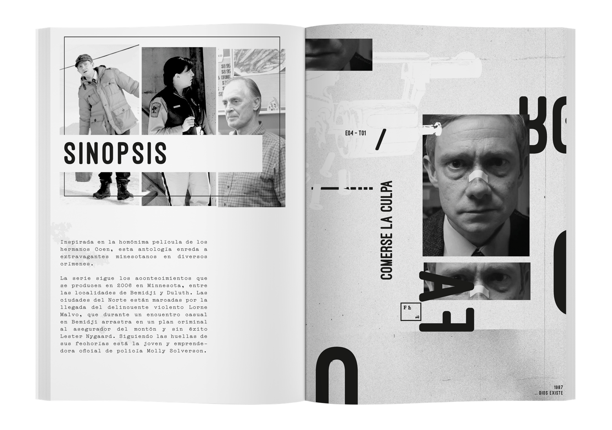

Fanzine de la serie “Fargo”
Este proyecto es un fanzine editorial experimental basado en la primera temporada de Fargo, concebido como una traducción gráfica de su atmósfera narrativa. La consigna fue representar visualmente el clima psicológico de la serie —frío, tensión, absurdo y violencia latente— combinando tipografía, composición e imagen para construir sentido, trabajando exclusivamente en blanco y negro. Se refuerza la idea de contraste moral, ambigüedad y crudeza que atraviesa la historia, y utilizando recursos como la fragmentación de imágenes, grandes masas tipográficas, ritmos irregulares y vacíos para generar incomodidad y suspenso. El fanzine articula datos narrativos, citas y descripciones con decisiones gráficas que buscan sumergir al lector en la misma sensación de extrañamiento que propone la serie, entendiendo la editorial no solo como soporte informativo, sino como un dispositivo expresivo capaz de comunicar atmósfera, tono y concepto de manera integral.
1 año - Laboratorio de diseño 2